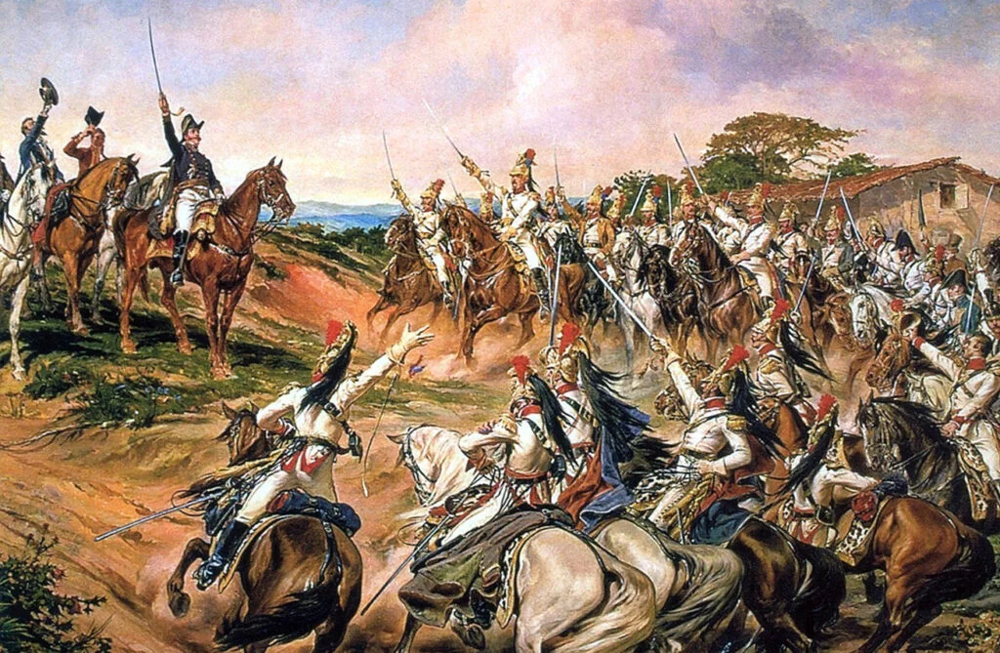
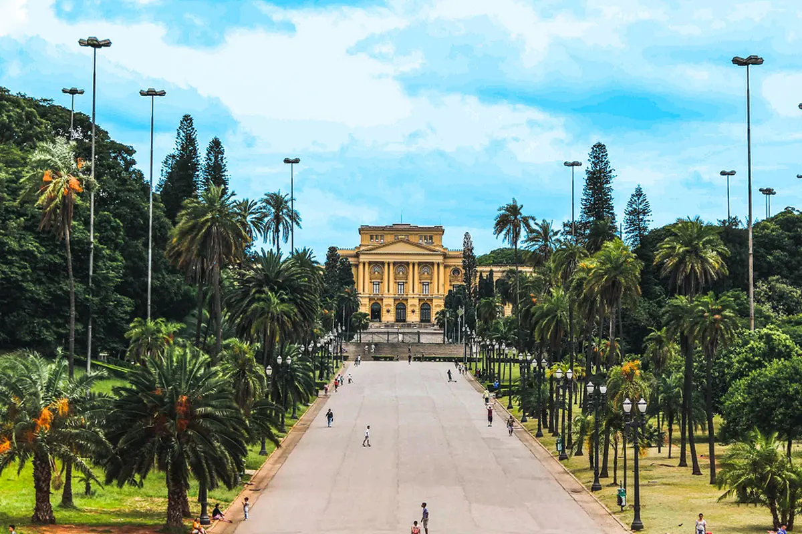

O parque está situado onde Dom Pedro I declarou a independência do Brasil em 7 de setembro de 1822, um dos eventos mais significativos da história brasileira. Este evento é marcante para a história de São Paulo em diversos sentidos possíveis, pois foi por este acontecimento que o Brasil conseguiu sua emancipação em relação a Portugal (que era a colônia do Brasil).
Em 1890, o governo do estado de São Paulo adquiriu a área com a intenção de transformá-la em um espaço público que celebrasse a independência do país, porém o Parque da Independência foi realmente inaugurado em 1922, durante as comemorações do centenário da independência do Brasil.
